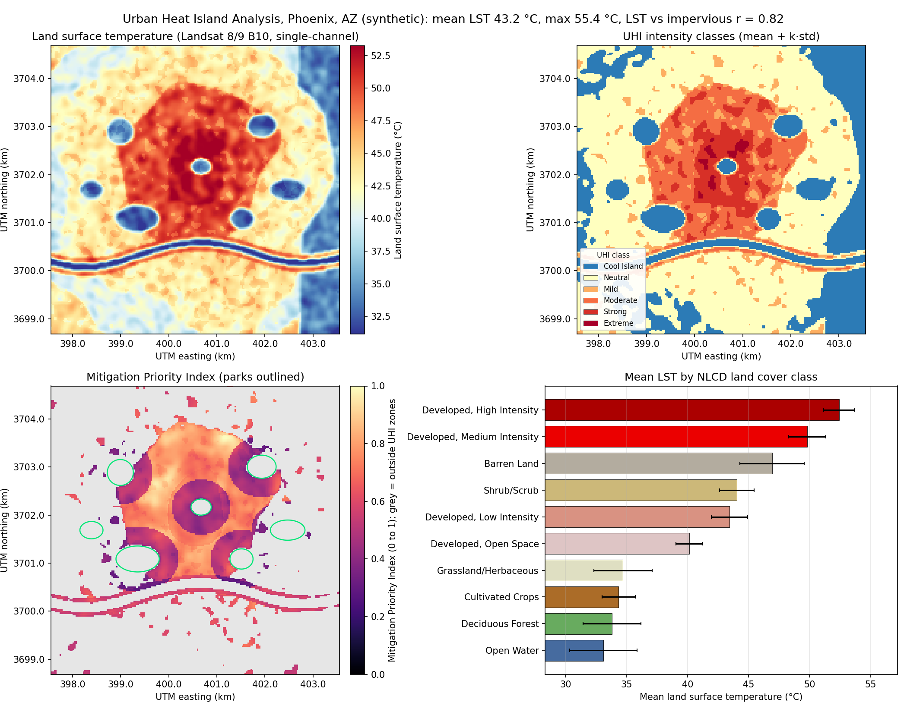

Urban planning
Urban Heat Island Analysis
Landsat 8/9 thermal band to land surface temperature, UHI intensity classes, land-cover correlation and a Mitigation Priority Index that tells planners where trees and cool roofs help most.
Mean LST 43.2 C, max 55.4 C. LST vs impervious surface r = 0.82. 378 ha flagged high priority.